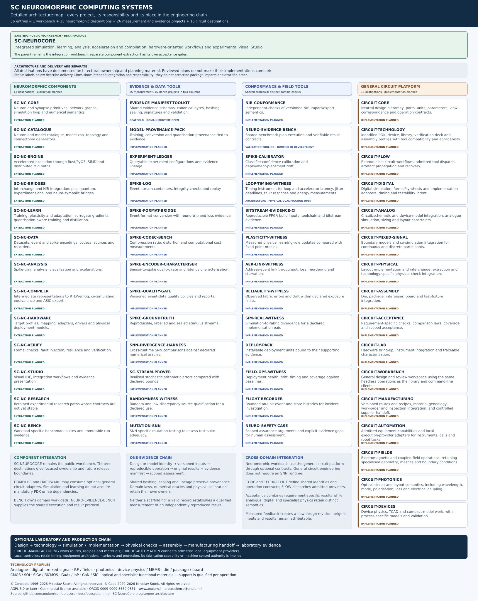
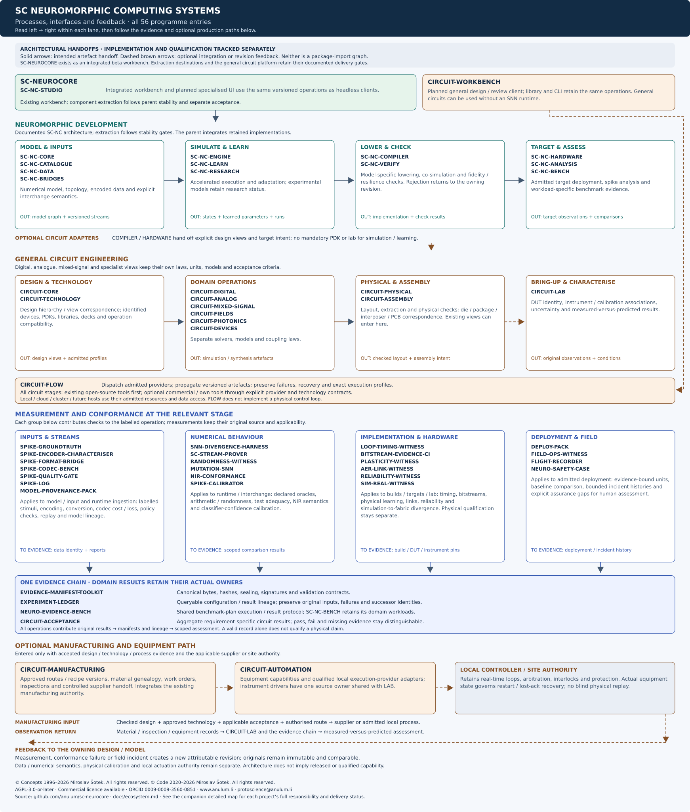
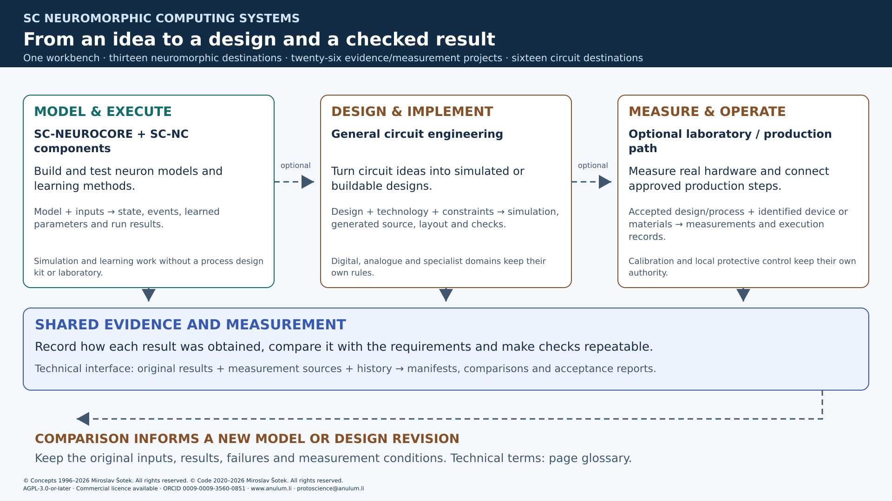
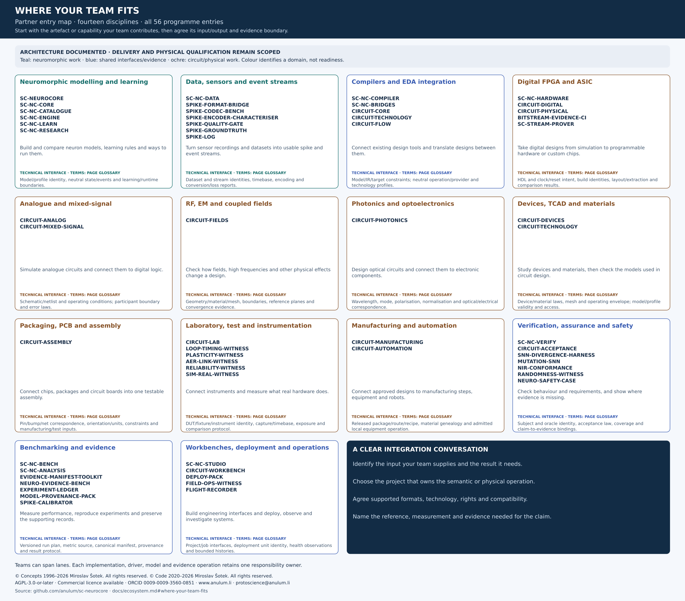
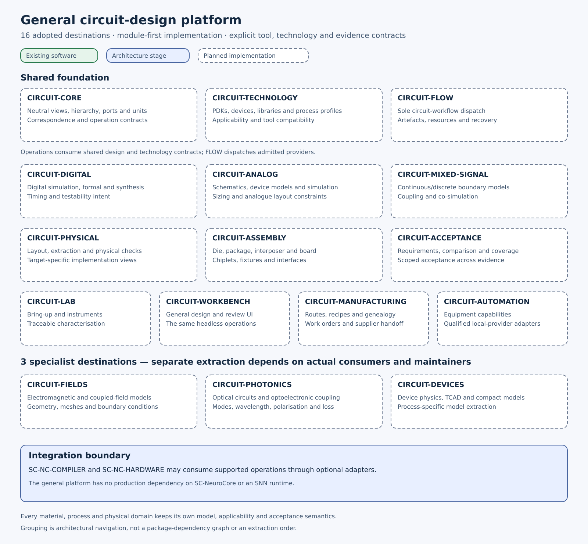
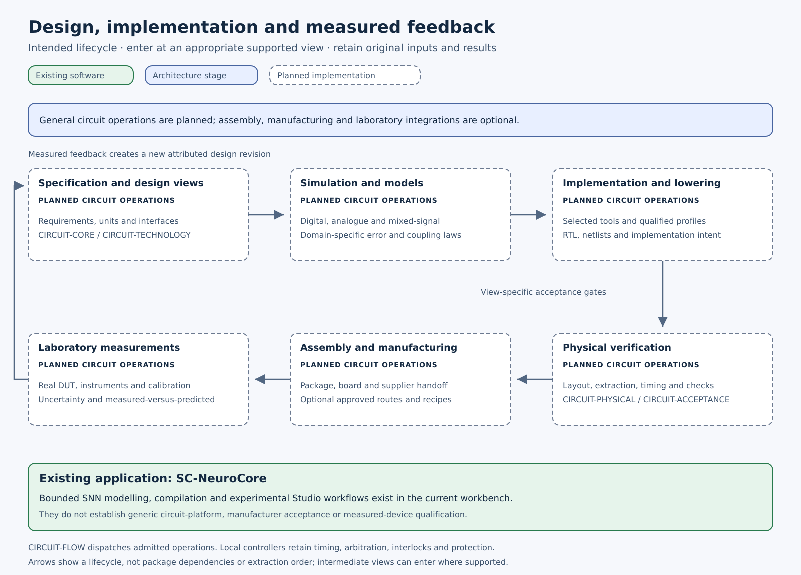

Group and Project Map
What this programme is for
This programme connects models of spiking neurons, circuit design and hardware testing so teams can carry a design from an experiment to a result they can check and reproduce. It serves researchers, software and circuit engineers, measurement teams and collaborators assessing the work. SC-NeuroCore is the existing software workbench; the smaller components, general circuit platform and manufacturing integrations are at the stages shown below.
Last reviewed: 2026-11-04. Status describes the documented delivery boundary, not blanket qualification of every model, backend or physical target.
-
Use the workbench today
Start with installation profiles and getting started. The experimental visual interface has its own Studio manual.
-
Find your team's entry point
Browse disciplines and interfaces or the partner entry map. Teams can contribute an adapter, a domain method, a design, a reference or a measurement capability.
-
Understand the architecture
Follow the project catalogue, processes and transition roadmap.
-
Read the evidence boundary
Architecture and delivery are distinct. Current project status separates the workbench, scaffolds and unfinished implementations.
Documented architecture, explicit delivery
Project summaries below describe their responsibility and main inputs and outputs. They are architectural interfaces, rather than released API names or a claim that every planned operation is implemented.
SC-NeuroCore will remain a public, open-source development workbench for the SC Neuromorphic Computing Systems group. The group is building a connected engineering workflow: develop models, compare their behaviour, implement them on a selected target and trace measured results back to the original design. The intended scope extends from neuromorphic software to general circuit engineering and optional laboratory and production integration.
The programme has four connected parts. Each retains its own engineering semantics, implementation status and evidence requirements.
| Programme line | Purpose and relationship |
|---|---|
| Neuromorphic workbench and components | The existing workbench brings simulation, learning, analysis, acceleration, compilation and experimental Studio workflows together. Thirteen planned SC-NC extractions would give these responsibilities focused releases and versioned interfaces. |
| Evidence and measurement | LOOP-TIMING-WITNESS and 25 supporting tools cover timing, data quality, numerical conformance, provenance, benchmarking, deployment and assurance. Shared records connect a claim to its actual source; they do not replace the domain or instrument checks. |
| General circuit engineering | Sixteen adopted destinations describe a platform for analogue, digital and mixed-signal designs, with specialist physical domains and technologies. Neuromorphic designs would be one application; the platform would also serve non-neural circuits. |
| Laboratory and production integration | Optional manufacturing and automation paths would connect design identities, approved processes, materials, equipment providers and measured hardware. Local controllers and manufacturing authorities retain their operational responsibilities. |
The split architecture is prepared. The current integrated package retains its documented maturity; component releases and migration guides will accompany the transition. General circuit and manufacturing capabilities described here remain planned. See the repository releases for the current package version.
How to read status
| Label | Meaning on this page |
|---|---|
| Existing | A current repository and usable package surface with its own documented maturity and supported workflows. |
| Scaffold | Repository and validation infrastructure exist; an installed domain runtime or released service is not established. |
| Architecture stage | Owned contracts and architecture-stage software or validation tooling exist; implementation and qualification remain scoped to their actual evidence. |
| Architecture documented | An owned written design and main interfaces exist. Implementation, independent qualification and release are separate milestones. |
| Planned | An adopted destination or extraction boundary; a separately released implementation is not announced. Current related work may still live in SC-NeuroCore. |
Architecture and delivery are separate axes. “Architecture documented” describes the design; Existing, Scaffold, Architecture stage and Planned describe delivery. These labels apply to the project destination. The “Where it lives today” column links current source and documentation, rather than promising that every listed module ships in the base wheel. Optional and source-only research paths retain their package boundaries. A documented architecture, valid manifest, simulation, synthesis report, manufacturer acceptance and calibrated physical measurement establish different facts. Domain laws, uncertainty and approval remain specific to the operation.
The maps share 56 entries: 1 workbench + 13 neuromorphic destinations + 26 measurement and evidence projects + 16 circuit destinations. In the catalogue, delivery is written on each card. In the circuit and lifecycle maps, green denotes existing software, blue architecture-stage projects or adopted direction, and dashed outlines planned implementation. Arrows in all four maps show intended handoffs and responsibility, rather than package imports, extraction order, released capability or physical operating permission.
Where your team fits
Choose a discipline, identify the artefact your team produces or consumes, and start with the corresponding project interfaces. A team may span several lanes; shared participation preserves the single responsibility owner named in each project summary. Source formats, numerical laws, technology access, instrument calibration and local operating authority remain explicit at integration. The glossary explains the technical abbreviations used below; each discipline starts with what its team would do in everyday engineering terms.
| Discipline | Projects your team touches | Contribute or consume | Interfaces to inspect first |
|---|---|---|---|
| Neuromorphic modelling and learning | SC-NEUROCORE, SC-NC-CORE, SC-NC-CATALOGUE, SC-NC-ENGINE, SC-NC-LEARN, SC-NC-RESEARCH | Build and compare neuron models, learning rules and ways to run them. Contribute model semantics, learning methods or runtime capabilities; consume explicit state and numerical contracts. |
Model/profile identity, neutral state/events and learning/runtime boundaries. |
| Data, sensors and event streams | SC-NC-DATA, SPIKE-FORMAT-BRIDGE, SPIKE-CODEC-BENCH, SPIKE-ENCODER-CHARACTERISER, SPIKE-QUALITY-GATE, SPIKE-GROUNDTRUTH, SPIKE-LOG | Turn sensor recordings and datasets into usable spike and event streams. Contribute encoders, readers, datasets or data-quality methods; consume identified streams with declared loss. |
Dataset and stream identities, timebase, encoding and conversion/loss reports. |
| Compilers and electronic design automation (EDA) | SC-NC-COMPILER, SC-NC-BRIDGES, CIRCUIT-CORE, CIRCUIT-TECHNOLOGY, CIRCUIT-FLOW | Connect existing design tools and translate designs between them. Contribute compiler passes or tool adapters; consume typed design views and admitted execution interfaces. |
Model/IR/target constraints; neutral operation/provider and technology profiles. |
| Digital programmable logic (FPGA) and custom chips (ASIC) | SC-NC-HARDWARE, CIRCUIT-DIGITAL, CIRCUIT-PHYSICAL, BITSTREAM-EVIDENCE-CI, SC-STREAM-PROVER | Take digital designs from simulation to programmable hardware or custom chips. Contribute RTL, constraints, digital validation or target integration; consume traceable implementation artefacts. |
HDL and clock/reset intent, build identities, layout/extraction and comparison results. |
| Analogue and mixed-signal | CIRCUIT-ANALOG, CIRCUIT-MIXED-SIGNAL | Simulate analogue circuits and connect them to digital logic. Contribute device-model integration, circuit studies or continuous/discrete coupling; consume scoped simulation results. |
Schematic/netlist and operating conditions; participant boundary and error laws. |
| Radio frequency (RF), electromagnetics (EM) and coupled fields | CIRCUIT-FIELDS | Check how fields, high frequencies and other physical effects change a design. Contribute electromagnetic or coupled-field operations; consume declared port or reduced-model results. |
Geometry/material/mesh, boundaries, reference planes and convergence evidence. |
| Photonics and optoelectronics | CIRCUIT-PHOTONICS | Design optical circuits and connect them to electronic components. Contribute optical models, layout integration or electrical coupling; consume technology-specific optical views. |
Wavelength, mode, polarisation, normalisation and optical/electrical correspondence. |
| Devices, device/process simulation (TCAD) and materials | CIRCUIT-DEVICES, CIRCUIT-TECHNOLOGY | Study devices and materials, then check the models used in circuit design. Contribute device/process studies, material profiles or compact-model validation; consume explicit applicability limits. |
Device/material laws, mesh and operating envelope; model/profile validity and access. |
| Packaging, printed circuit boards (PCB) and assembly | CIRCUIT-ASSEMBLY | Connect chips, packages and circuit boards into one testable assembly. Contribute die/package/board interfaces, stackups or test-fixture integration; consume consistent assembly deliverables. |
Pin/bump/net correspondence, orientation/units, constraints and manufacturing/test inputs. |
| Laboratory, test and instrumentation | CIRCUIT-LAB, LOOP-TIMING-WITNESS, PLASTICITY-WITNESS, AER-LINK-WITNESS, RELIABILITY-WITNESS, SIM-REAL-WITNESS | Connect instruments and measure what real hardware does. Contribute instrument adapters, measurement methods or independently supported calibration; consume original captures and uncertainty. |
Device under test (DUT), fixture and instrument identity; capture/timebase, exposure and comparison protocol. |
| Manufacturing and automation | CIRCUIT-MANUFACTURING, CIRCUIT-AUTOMATION | Connect approved designs to manufacturing steps, equipment and robots. Contribute supplier/MES/equipment adapters and process qualification; consume approved routes and original execution observations. |
Released package/route/recipe, material genealogy and admitted local equipment operation. |
| Verification, assurance and safety | SC-NC-VERIFY, CIRCUIT-ACCEPTANCE, SNN-DIVERGENCE-HARNESS, MUTATION-SNN, NIR-CONFORMANCE, RANDOMNESS-WITNESS, NEURO-SAFETY-CASE | Check behaviour and requirements, and show where evidence is missing. Contribute independent references, comparison laws or assurance arguments; consume attributable results and visible gaps. |
Subject and oracle identity, acceptance law, coverage and claim-to-evidence bindings. |
| Benchmarking and evidence | SC-NC-BENCH, SC-NC-ANALYSIS, EVIDENCE-MANIFEST-TOOLKIT, NEURO-EVIDENCE-BENCH, EXPERIMENT-LEDGER, MODEL-PROVENANCE-PACK, SPIKE-CALIBRATOR | Measure performance, reproduce experiments and preserve the supporting records. Contribute workloads, statistics or reproducibility methods; consume evidence-bound results and model/experiment lineage. |
Versioned run plan, metric source, canonical manifest, provenance and result protocol. |
| Workbenches, deployment and operations | SC-NC-STUDIO, CIRCUIT-WORKBENCH, DEPLOY-PACK, FIELD-OPS-WITNESS, FLIGHT-RECORDER | Build engineering interfaces and deploy, observe and investigate systems. Contribute accessible engineering UI, deployment integration or incident workflows; consume existing headless operations and evidence. |
Project/job interfaces, deployment unit identity, health observations and bounded histories. |
Presentation and print
The detailed maps preserve the complete catalogue. These 16:9 figures provide larger text for presenting the process and discipline entry points:
- Engineering chain — PNG (SVG).
- Models, data, compilers and digital design — PNG (SVG).
- Analogue, fields, photonics, devices and assembly — PNG (SVG).
- Laboratory, manufacturing, assurance, evidence and operations — PNG (SVG).


Open the print-friendly page for a standalone reading and browser-print version with the same project summaries.
Programme overview

Open the full-size SVG, download PNG, or download JPG.


Browse the catalogue by responsibility: neuromorphic components, measurement and evidence tools, or general circuit destinations. The companion views explain the process interfaces, circuit family and lifecycle.
Processes and interfaces

Open the process and interface SVG, download PNG, or download JPG. Follow the integration contracts, measurement responsibilities and production path in the text.


This companion view places all 56 entries in their intended engineering flows. Each operation can reject unsupported inputs and returns attributable results.
Neuromorphic models and streams lead through execution, learning, lowering and checks to target observations and analysis. Optional compiler and hardware adapters hand explicit design views to general circuit operations. Circuit engineering retains its own models, technology profiles and acceptance laws; existing schematics, RTL, netlists or layouts may enter at the appropriate stage. The diagram's left-to-right order does not require fabrication for every design.
Input, numerical, hardware and field tools contribute evidence at their relevant stages. Shared manifests and experiment lineage preserve the source and conditions of each result. SC-NC-BENCH owns neuromorphic workloads; NEURO-EVIDENCE-BENCH provides a shared execution and result protocol. CIRCUIT-ACCEPTANCE aggregates circuit requirement results without replacing domain checks or human approval.
The optional production branch binds accepted design and process identities to supplier handoff or admitted local equipment. Original material, inspection and measurement records return through laboratory and evidence contracts. Failures, measured divergence and field incidents inform a new revision of the owning design or model; they do not overwrite its original results. Qualified local controllers and site authorities retain physical timing and protective control.
Programme connections

The diagram summarises the four programme lines. Detailed project ownership appears in the tables and full-size maps; physical control remains with the qualified local controller and site authority.
Partner entry map

Open the partner entry SVG, download PNG, or download JPG. Use the discipline matrix for direct project links and project summaries for exact ownership boundaries.


Public workbench and future products
SC-NeuroCore keeps its public workbench role and current open-source licence. Future specialised components may become open-source or proprietary products. Their licensing and commercial boundaries remain under discussion with investors and IP partners and will be announced individually. Several supporting tools will remain public, with their own documented licensing and release status.
What exists today
| Repository | Function | Current status |
|---|---|---|
| SC-NEUROCORE | Integrated development workbench: simulation, learning, analysis, acceleration, compilation, hardware-oriented evidence and the experimental visual Studio (sc-neurocore[studio]).Interfaces: Model, data and workflow configuration → simulation, analysis and implementation artefacts with scoped evidence. |
Existing · architecture documented — repository and Python package; package metadata remains at beta maturity. Individual capabilities have their own evidence boundaries. |
| LOOP-TIMING-WITNESS | Timing instrument for loop and accelerator latency, jitter, deadlines, fault response and energy measurements. | Architecture stage — software/native/RTL simulation and measurement contracts. Physical board qualification remains pending. |
| EVIDENCE-MANIFEST-TOOLKIT | Portable evidence-manifest contracts and validation infrastructure. | Scaffold — architecture-stage repository with local checks. No released signing, verification or domain runtime package. |
| NEURO-EVIDENCE-BENCH | Auditable benchmark plans, evidence-backed results and independent reruns. | Architecture stage — repository with validation tooling; benchmark execution, metric collection and comparison remain under implementation. No released benchmark runtime. |
Why split the workbench
A modeller should be able to work with neuron primitives and analysis without installing an FPGA toolchain. A hardware engineer should find compilation and target integration together. A team checking results should be able to use an evidence tool through a documented contract. Focused repositories make these entry points easier to understand and maintain.
SC-NeuroCore keeps its role as the place to develop and integrate the complete workflow. It will continue to support experiments spanning several components and provide a practical route through the group. Specialised repositories will own their implementations and public interfaces; shared functionality should be consumed through those interfaces rather than copied between repositories.
Specialised repositories
All 13 repositories in this section are planned extraction destinations. Their summaries describe documented ownership and intended interfaces. The current implementations remain in the workbench until the transition gates pass.
Foundation and execution
| Destination | Responsibility | Status | Where it lives today |
|---|---|---|---|
| SC-NC-CORE | Neutral population, graph, state, event, seed and numerical protocols. Concrete model selection stays with the catalogue or compatibility facade. Interfaces: Resolved model factories and numerical/state contracts → neutral populations, graphs, state and events. |
Architecture documented · extraction planned | neurons; synapses; network. Neuron APIs. |
| SC-NC-CATALOGUE | Canonical model identities, authored equations and profiles, declarations and model factories, with provenance and compatibility preserved. Interfaces: Authored equations, profiles and provenance → identified models, declarations and resolved factories. |
Architecture documented · extraction planned | neuron models; model_zoo; network topology. Model zoo. |
| SC-NC-ENGINE | Execution, scheduling and native-runtime boundaries, including supported state, update and restore contracts; model semantics remain catalogue-owned. Interfaces: Admitted model/runtime contracts and commands → execution state, events and attributable observations. |
Architecture documented · extraction planned | accel; Rust engine; MPI runner. Acceleration boundaries. |
| SC-NC-BRIDGES | Directional interchange and external-provider adapters with declared transformation assumptions and losses; model equations and lowering retain their owners. Interfaces: External models, formats or provider requests → typed representations or results with explicit changes and losses. |
Architecture documented · extraction planned | nir_bridge; adapters; bridges; quantum; hdc; neuro_symbolic. NIR integration. Speculative bridges retain research status. |
Learning and data
| Destination | Responsibility | Status | Where it lives today |
|---|---|---|---|
| SC-NC-LEARN | Training orchestration, learning rules and optimiser state, quantisation-aware objectives and distillation through explicit model/runtime contracts. Interfaces: Model, data, learning rule and optimiser configuration → learned parameters, learning state and provenance. |
Architecture documented · extraction planned | learning; training; synaptic plasticity; qat; distillation. Learning APIs. |
| SC-NC-DATA | Datasets, event and spike encodings, codecs, sources and recorders. Interfaces: Digital samples, datasets and accepted state payloads → typed streams, encodings and checkpoint records. |
Architecture documented · extraction planned | datasets; encoding; recorders; spike_codec; sources. Dataset contracts. |
| SC-NC-ANALYSIS | Derived observables, statistical interpretation and visual views over identified traces; runtime collection stays with the producer. Interfaces: Identified traces, events and comparison results → derived observables, validity information and views. |
Architecture documented · extraction planned | analysis; viz. Analysis reference. Source-only areas excluded from the base wheel. |
Silicon and verification
| Destination | Responsibility | Status | Where it lives today |
|---|---|---|---|
| SC-NC-COMPILER | Intermediate representations to RTL/Verilog, co-simulation, equivalence and ASIC export. Interfaces: Model/profile, typed intermediate representation and target constraints → generated source and bound artefact bundles. |
Architecture documented · extraction planned | compiler; ir. Compiler APIs. |
| SC-NC-HARDWARE | Target profiles, mapping, adapters, drivers and physical deployment models. Interfaces: Target facts, generated artefacts and admitted commands → device integration and original acquisition observations. |
Architecture documented · extraction planned | hardware; target profiles; source-only drivers. Hardware abstraction. |
| SC-NC-VERIFY | Formal checks, fault injection, resilience and verification. Interfaces: Bound subject, comparison law and independent reference → scoped findings, conformance or inconclusive results. |
Architecture documented · extraction planned | verification; formal; fault_injection. Verification contracts. |
Workspace and research
| Destination | Responsibility | Status | Where it lives today |
|---|---|---|---|
| SC-NC-STUDIO | Visual IDE, integration workflows and evidence presentation. Interfaces: User projects and public operation requests → observed jobs, design views, replay and evidence presentation. |
Architecture documented · extraction planned | Studio backend; frontend. Studio preview. |
| SC-NC-RESEARCH | Named hypotheses, contextual experiments and research workloads with explicit source, purpose, uncertainty and disposition. Interfaces: Named hypotheses, source models and experimental context → attributable experiments and explicit limitations. |
Architecture documented · extraction planned | Not yet consolidated. opt-in experiments; source-only research. Research boundaries. |
| SC-NC-BENCH | Versioned neuromorphic workloads and public-runtime comparison adapters; shared evidence execution protocols remain separately owned. Interfaces: Versioned workloads, public runtime adapters and comparison conditions → benchmark observations and reproducibility records. |
Architecture documented · extraction planned | benchmark APIs; workloads and results. Benchmark evidence. |
Supporting tools
These 26 measurement and evidence projects comprise LOOP-TIMING-WITNESS and 25 supporting tools. They serve the group through explicit data, measurement and evidence contracts. They complement the SC-NC components and have separate responsibilities. EVIDENCE-MANIFEST-TOOLKIT has the scaffold status described above. NEURO-EVIDENCE-BENCH also has architecture-stage validation tooling. LOOP-TIMING-WITNESS has software/native/RTL measurement contracts; physical board qualification remains pending. The other tools below are planned.
Evidence and lineage
Data and encoders
Numerical behaviour and conformance
Hardware measurements
Deployment and assurance
SC-NC-BENCH owns workload-specific benchmark suites and their run evidence. NEURO-EVIDENCE-BENCH provides the shared plan-execution and result protocol that those suites and Studio can consume. LOOP-TIMING-WITNESS measures timing; AER-LINK-WITNESS assesses event-link behaviour. These boundaries keep domain workloads, shared tooling and physical measurements distinct.
General circuit-design platform
The group is designing a general platform connecting circuit specifications, simulation, implementation, physical design, assembly and measured hardware. It is intended for analogue, digital and mixed-signal designs from the beginning, with explicit extension points for other physical domains and technologies. SC-NeuroCore would be one application of that platform; the general platform would be usable without neuron models or an SNN runtime.
The sixteen names below are adopted destinations for the new family. Actual tool, process, device and manufacturing support is qualified per operation and published with its limitations. No tapeout or manufacturing schedule is announced.
Coverage and separate semantics
| Design family | Intended scope and distinct requirements |
|---|---|
| Digital | Synchronous and asynchronous logic, control, processors, accelerators and memories; FPGA and ASIC implementations, clocks/reset, equivalence, timing and testability. |
| Analogue | Signal conditioning, references, filters, oscillators, sensors and power circuits; continuous device behaviour, stability, noise, variability and operating limits. |
| Mixed-signal | Data converters, timing circuits, sensor interfaces and digitally assisted analogue; explicit sampling, thresholds, event timing and continuous/discrete coupling. |
| RF and coupled fields | RF/microwave structures, signal/power integrity and electrothermal or electromechanical effects; specialised models, geometry, meshes and boundary conditions. |
| Photonic and optoelectronic | Optical circuit/layout models and electrical coupling, with wavelength, mode, polarisation and optical-loss semantics. |
| Device and specialist technologies | Process/device modelling, specialised memories, MEMS and research extensions such as cryogenic circuits, each with its own supported models and validation. |
| Assembly and boards | Die/package/interposer/PCB interfaces, discrete components, heterogeneous chiplets and stacked systems, test fixtures and bring-up. |
Technology profiles would distinguish silicon CMOS/SOI and device families, SiGe/BiCMOS and high-voltage processes, compound or wide-bandgap materials such as GaAs, InP, GaN and SiC, optical platforms and specialised functional materials. Material, substrate, device, process, layout stack and package are separate attributes. Adding one profile would not imply support for every design or operation using that material. Emerging or research models would retain their research status.
Planned platform repositories
The three specialist destinations have independent repository boundaries only when actual supported use cases, maintainers and release ownership justify them. A distinct material, node or adapter does not automatically require another repository. Every destination follows a module-first implementation decision; shared foundation packages may initially live in one workspace. Separate repositories require independent consumers, lifecycle and maintainers. CIRCUIT-ACCEPTANCE aggregates requirement results; SC-NC-VERIFY retains SNN fidelity and digital formal operations remain with their actual tool owners.

Open the circuit-platform SVG, download PNG, or download JPG. Browse all circuit destinations and their separate design semantics. The destinations share design and technology contracts while retaining separate domain models and acceptance rules. Their grouping does not commit to extracting sixteen repositories at once.


Integration model

Open the lifecycle SVG, download PNG, or download JPG. Read the integration model, production responsibilities and acceptance milestones.


The arrows describe an intended lifecycle. Individual views and operations keep their own semantics and entry points; an existing RTL, schematic, netlist or layout can enter at the appropriate stage. Iterations produce versioned successor designs and preserve their original inputs and results.
The first integration route uses existing open-source tools. Candidates include Yosys/OpenROAD/KLayout through OpenROAD-flow-scripts, xschem, ngspice with supported compact models and digital co-simulation, and KiCad for board integration. Specialist tools and commercial flows would be admitted through explicit tool/technology contracts. Existing workflow and representation infrastructure, including SiliconCompiler, LibreLane and CIRCT, would be evaluated before building equivalent functionality. Relevant Accellera interface and verification standards would inform supported interchange contracts. Own tools would address demonstrated integration or engineering requirements. PDK and IP access, applicable licences and manufacturer requirements remain specific to the selected target; open tooling alone does not establish production readiness.
The general platform would reuse the existing evidence, record and measurement contracts as those capabilities become available. Tool operations would treat designs, PDK decks and embedded scripts as untrusted executable inputs, with explicit isolated execution and bounded resources. Instrument drivers and original calibration associations would have one source owner. The platform would preserve original artefacts and distinguish simulated, implemented, manufacturer-accepted and measured results. Digital exactness, analogue error/statistical laws and specialist physics would retain separate acceptance criteria.
Manufacturing and laboratory automation
Manufacturing is an optional integration path. Circuit design and simulation would remain usable without a laboratory, production line or manufacturing execution system. The supported modes would distinguish supplier handoff, operator-owned equipment and non-actuating qualification or replay.
CIRCUIT-MANUFACTURING would bind design and technology identities to approved routes, recipe versions, material genealogy, work orders and inspection results. It would integrate an existing manufacturing authority and its records rather than introduce a competing factory-management system. CIRCUIT-AUTOMATION would provide explicit equipment capabilities and adapters to qualified local execution providers. Instruments shared with CIRCUIT-LAB would retain one canonical driver and their original calibration associations.
Platform workflows would dispatch admitted operations through CIRCUIT-FLOW. Actual control-loop timing, equipment arbitration, interlocks and protective responses would remain with the qualified local controller and site authority. A circuit view, manufacturing recipe, robot task and measurement record would keep distinct semantics. Lost acknowledgements or restarts must be reconciled against actual equipment state; they cannot authorise blind physical replay.
The first operating integration would use read-only equipment observations and real material records. Supervised operations, robot handling, lithography or other specialist processes would require their own selected equipment, process window, calibration, inspection, failure and recovery evidence. Bounded unattended operation would require an explicit qualified operating envelope and intervention path. No automated fabrication capability or machine-control permission is announced by this architecture.
Effect on the SC-NeuroCore split
The thirteen SC-NC destinations remain the neuromorphic decomposition. SC-NC-COMPILER would retain model-specific numerical semantics and lowering; SC-NC-HARDWARE would retain SNN target and runtime integration. They could consume admitted general circuit operations through optional adapters. SC-NC-VERIFY would retain domain fidelity checks, and SC-NC-STUDIO could expose those operations to its users.
Execution profiles would support admitted local, cloud, cluster and future environments; the architecture is not tied to the current machines. Actual provider resources, data/IP access and isolation would be checked per operation.
The generic platform would have no production dependency on SC-NeuroCore. Simulation and learning users would not acquire mandatory PDK, physical-design or laboratory installations. The existing parent-stability and separately reviewed extraction gates still apply. Open implementation, native-runtime, scientific and hardware obligations remain requirements of their actual components; an architecture document does not complete them.
Development roadmap
| Milestone | Intended result | Evidence required before claiming it |
|---|---|---|
| Architecture and interfaces | Accepted ownership, design/view and technology contracts, tool boundaries and compatibility policy. | Reviewed interfaces and actual consumers, with supported and unsupported cases explicit. |
| Qualified design operations | Usable digital and analogue operations with selected real tools and technology profiles. | Installed library/CLI workflows, actual simulation/implementation outputs and engineering checks, including failures and recovery. |
| Integrated mixed-signal workflow | Real continuous/discrete participants and a workbench over the same headless operations. | Non-neural digital, analogue and mixed reference designs, cross-view correspondence, coupling/error checks and reproducibility. |
| Manufacturing preparation | Consistent physical, die/package/board and test deliverables for a selected target. | Applicable physical checks, testability, actual manufacturer review and accepted fabrication/assembly conditions. |
| Measured hardware and extensions | Characterised implementations and independently qualified specialist profiles. | Original DUT/instrument/calibration identities, uncertainty, measured-versus-predicted results and compatibility evidence. |
| Qualified manufacturing operations | Selected supplier, laboratory or cell integration with controlled material and process records. | Real read-only provider round-trips, approved route/recipe identities, qualified local protection, supervised operation and inspection/recovery evidence before physical or unattended claims. |
Architecture and interface review is the current stage. Implementation stages depend on accepted boundaries, supplier contracts and actual engineering capacity. Publicly documented measured designs, such as the OpenFASOC temperature-sensor tapeout, would provide external comparison references after their source/data and measurement conditions are admitted.
These milestones describe intended capability and acceptance. They carry no release dates and do not announce packages, fabricated devices or specialist support that has not been demonstrated. The original workbench and component transition continues under its existing stability and migration requirements.
Neuromorphic transition roadmap
The thirteen destinations follow the retained workbench's stability gates. Milestones describe the evidence needed for a transition; no extraction date is announced and current users continue with the existing package.
| Milestone | Intended result | Evidence required before claiming it |
|---|---|---|
| Retained workbench stability | Complete the retained component, model-fidelity and Studio obligations before extraction. | Reviewed behaviour, native and scientific evidence, reproducible workflows and the applicable stability gates for the complete retained programme. |
| Component boundaries | Versioned public APIs, dependency and package boundaries for the thirteen destinations. | Reviewed contracts, real consumers, compatibility checks and explicit optional dependencies. |
| First qualified extraction | An independently installable component consumed by the workbench. | Installed producer and separate consumer workflows, matching numerical/artefact behaviour, release ownership and migration guidance. |
| Progressive migration | Extract further components only when each accepted boundary is qualified. | Per-component packaging, compatibility, documentation, parity and benchmark evidence where applicable; supported workbench workflows preserved. |
| Integrated component ecosystem | Workbench and specialised consumers use maintained versioned interfaces. | End-to-end cross-component workflows, maintained releases and published migration/support contracts. |
How the transition will work
The retained programme must reach its evidenced stability gates before extraction. Each component then needs a reviewed API, dependency boundary, packaging contract, compatibility checks and a migration guide. The workbench will integrate components through those contracts as they become available. There is no announced split date or migration deadline.
For current use, continue with the existing SC-NeuroCore installation profiles and getting-started guide. This map introduces the repository organisation; it does not announce a package-name change or ask users to migrate now. Release notes and migration guides will describe any future import or installation changes before users need to act.
Use the product overview for today's workflow and evidence boundary when evaluating results. Measurement, verification and assurance tools will report scoped evidence; certification and deployment approval require the applicable human assessment.
Reading paths by role
-
Modeller or researcher
Installation → getting started → neuron APIs, model zoo and Studio manual.
-
Hardware engineer
Compiler APIs → hardware abstraction → target profiles and hardware evidence.
-
Evaluator or reviewer
Cross-framework evidence → benchmark contracts, verification and the process map.
-
Partner or investor
Product overview → where your team fits → current status, licensing, neuromorphic transition and circuit milestones.
Abbreviations
Engineering and technology terms used on this page
| Term | Meaning |
|---|---|
| AER | Address-event representation: an event interface carrying source addresses. |
| API | Application programming interface. |
| ASIC | Application-specific integrated circuit. |
| BiCMOS | Bipolar and complementary metal-oxide-semiconductor devices in one process. |
| CMOS | Complementary metal-oxide-semiconductor technology. |
| DUT | Device under test. |
| EDA | Electronic design automation. |
| EM | Electromagnetic. |
| MES | Manufacturing execution system. |
| FPGA | Field-programmable gate array. |
| GaAs / GaN | Gallium arsenide / gallium nitride. |
| HDL | Hardware description language. |
| IDE | Integrated development environment. |
| InP | Indium phosphide. |
| IP | Intellectual property; reusable design blocks in circuit engineering. |
| IR | Intermediate representation used between design or compiler stages. |
| MEMS | Microelectromechanical systems. |
| MPI | Message Passing Interface for distributed computation. |
| NIR | Neuromorphic Intermediate Representation for exchanging neural graphs. |
| PCB | Printed circuit board. |
| PDK | Process design kit: process-specific device, layout and verification resources. |
| PyO3 | Rust bindings for Python interfaces and extension modules. |
| RF | Radio frequency. |
| RTL | Register-transfer level, a digital hardware representation. |
| SC | Stochastic computing. |
| SiC / SiGe | Silicon carbide / silicon-germanium. |
| SIMD | Single instruction, multiple data. |
| SNN | Spiking neural network. |
| SOI | Silicon on insulator. |
| TCAD | Technology computer-aided design for device and process modelling. |
| UI / CLI | User interface / command-line interface. |
Get involved
Use GitHub issues for reproducible problems or a concrete contribution proposal, and discussions for workflow and integration questions. Include the affected model, package/profile, inputs and evidence boundary so the discussion reaches the relevant responsibility.
For research collaboration, manufacturing integration, commercial licensing or partnership/IP enquiries: www.anulum.li | protoscience@anulum.li.
When citing the software, use the versioned CITATION.cff metadata and identify the release used. Project-level citation does not replace the original model publication or the provenance of a particular dataset or result.